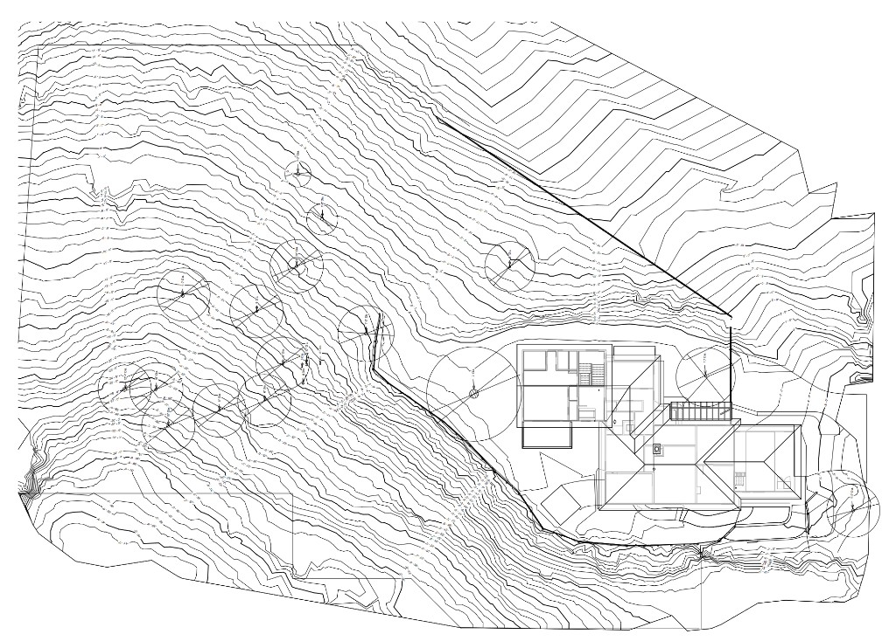

Property Owners
Property Documentation: Maximizing Value Across the Ownership Lifecycle

Detailed and accurate existing conditions documentation is an indispensable foundation for site planning, providing the necessary tools to deliver great results and generate strong professional references. It serves as a clear, easily communicated record of the current state of a site, meticulously capturing buildings, heritage trees, landscape features and elements, topography, and plantings. In the modern era of advanced design technology, high-quality documentation is critical because it forms the basis of a strong 2D or 3D model that feeds modern AI schematic design and visualization tools. Employing a complete documentation process improves planning, enhances communication, and helps avoid costly delays and rework, leading to better outcomes and significantly higher client satisfaction.
The deliverable package for Existing Conditions Documentation is robust, providing all necessary context in a precise, usable format. The core deliverable is a set of detailed 2D site plans, which are essential for accurate planning and include:
A LiDAR-measured terrain map provides a high-fidelity, highly accurate representation of the existing ground plane that surpasses the detail of standard topographic data. Utilizing state-of-the-art technologies such as LiDAR scanning and drone photography during data collection ensures efficiency and accuracy gathering millions of individual measurements. For instance, a comprehensive LiDAR terrain map ensures the precise locations of walls, paths and protected or Heritage trees allowing them to be accurately identified and seamlessly integrated into the design scheme.
When required, 3D models of the terrain and existing buildings may also be provided. These models offer crucial visual context and function as a versatile, three-dimensional template for conceptualizing design ideas in real space as they relate to structures in 3D and allow for virtual review of landscaping views from inside of the buildings.
Accurate site data is a fundamental tool that informs every creative and practical decision in a project. This documentation allows professionals to fully understand key site features and important details of existing hardscape and built elements, including pools, fences, retaining walls, large stones, water elements, and trellises.
Beyond a physical inventory, the data is crucial for reviewing view corridors, understanding prevailing wind patterns, and analyzing solar orientation. A comprehensive LiDAR terrain map ensures the precise locations of protected or Heritage trees are accurately identified and integrated into the design scheme. By starting with a high-fidelity representation of the existing site, designers can mitigate risks, ensure compliance with local regulations, and unlock the full design potential of the property.
The methodology for generating detailed Existing Conditions Documentation is a streamlined, six-step process designed for efficiency and high accuracy:
Investing in professional Existing Conditions Documentation is a preventative measure that yields significant returns by mitigating the risk of far greater expenses later in the project. Typical projects range from $1,000 to $5,000, contingent upon site size, landscape complexity (such as steep terrain or numerous built structures), and the specific level of detail requested.
Most importantly, this early investment avoids costly delays and extensive rework, which are often triggered by inaccurate measurements or unexpected site conditions discovered deep into construction. By eliminating these common pitfalls, the documentation process ensures smoother project execution, minimizes change orders, and ultimately drives higher client satisfaction. High-quality documentation shifts the design process from reactive problem-solving to proactive, informed creation. It serves as the single source of truth for the project, ensuring every plan starts on a powerful, reliable foundation.
Contact us for an Existing Conditions Documentation Quote.
Get in TouchProperty Documentation: Maximizing Value Across the Ownership Lifecycle
Accurate plans and models fast
2D Plans, 3D models and thorough Photo Documentation
Planning for transition, growth and safety with ECD
Efficient, profitable, property operation and management with ECD
ECD: The Blueprint for Flawless Events
Cost Reduction and Risk Mitigation in Construction
An accurate foundation for success in modern landscape architecture
Planning a site or landscape project? Discuss capture scope, deliverables, and schedule with our team.
Get in TouchA comprehensive list of types of buildings, sites, and campuses Ground Truth 3D has scanned, with links to content where available.
Discuss scope, deliverables, and timeline with our team.
Get in TouchStart with a conversation about your documentation needs.
Get in Touch